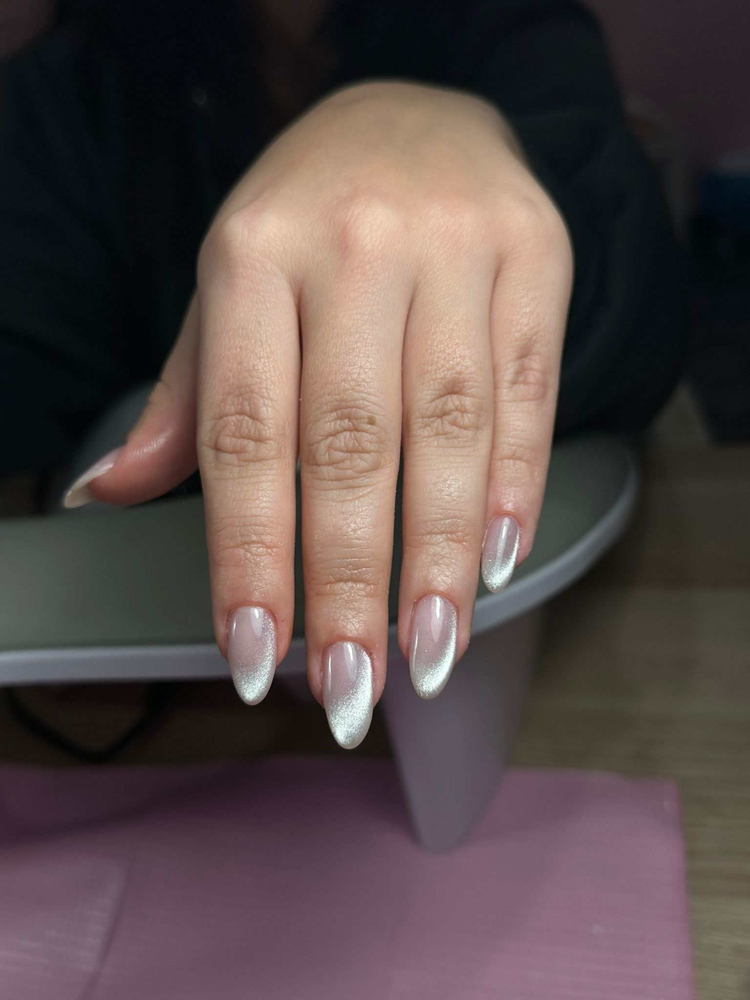
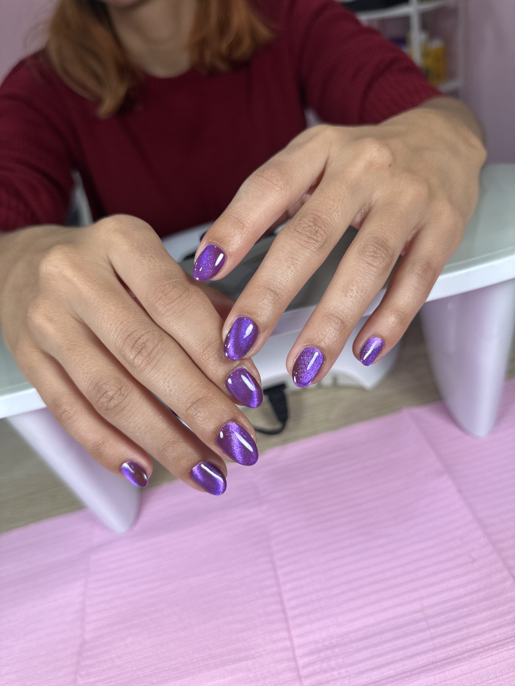
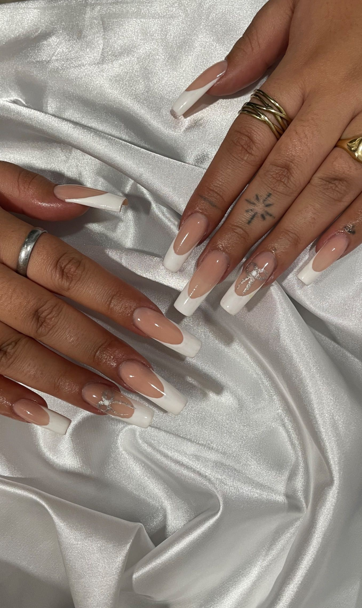
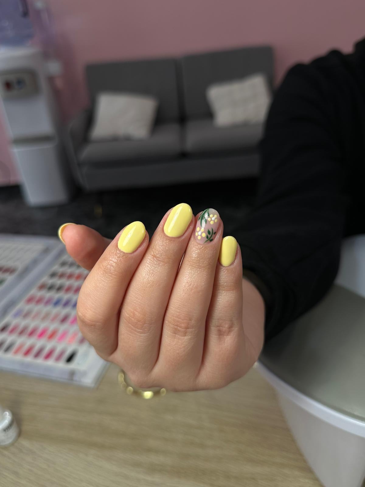
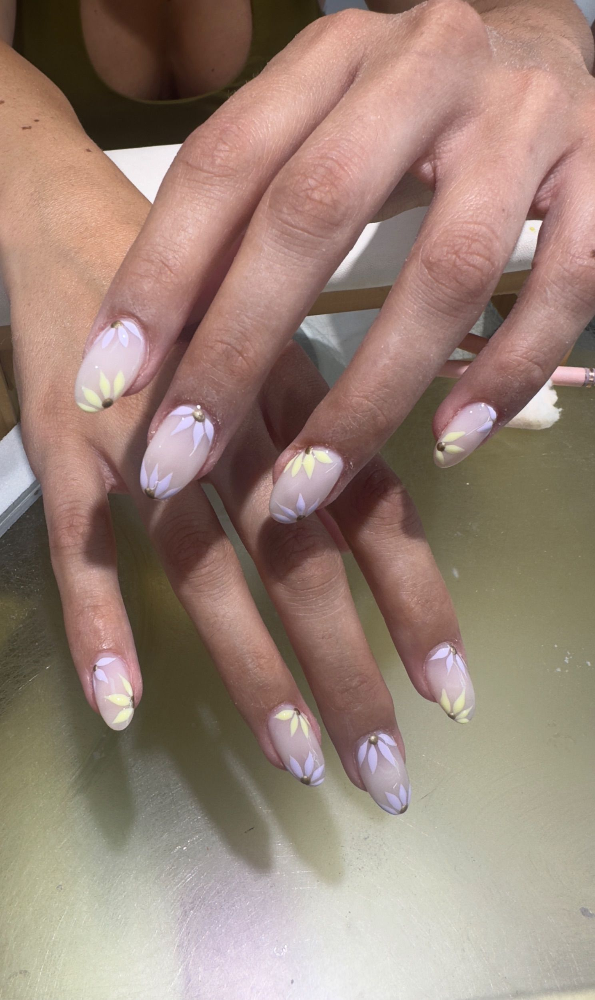
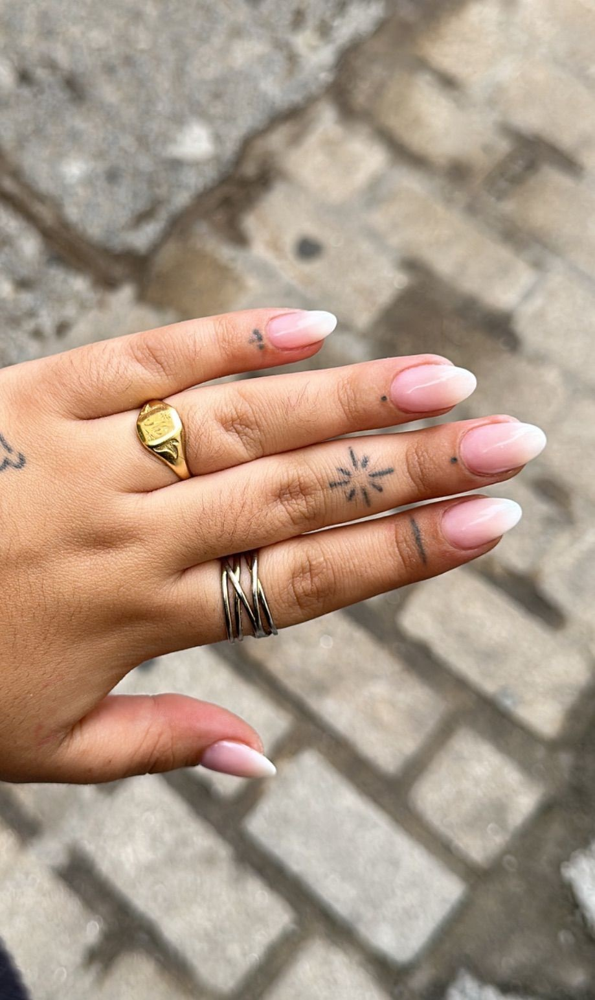
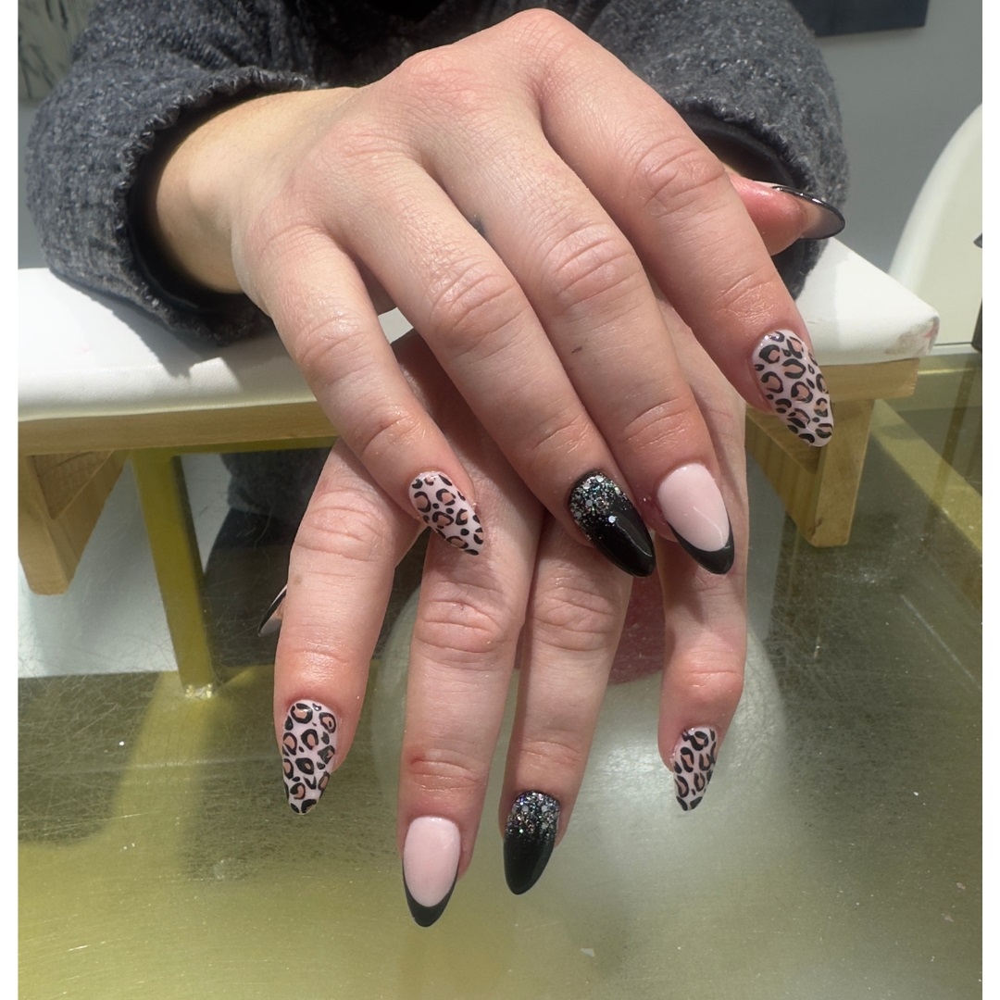
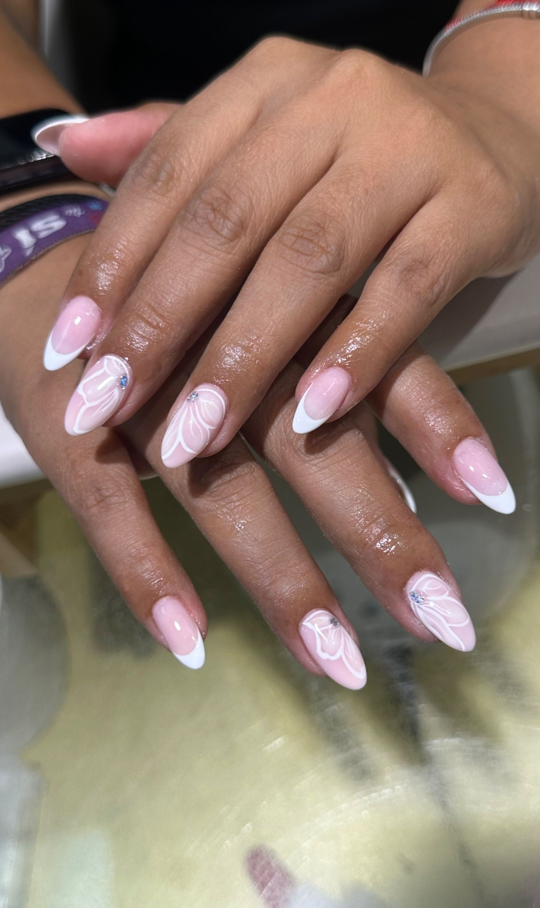
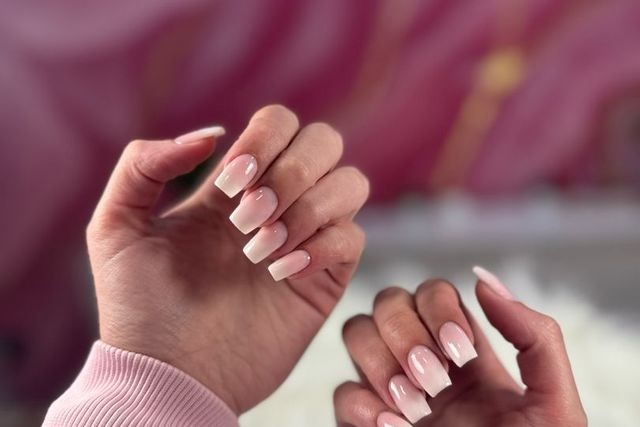

Bienvenida a Eme Studio 20, un espacio especializado en manicura y pedicura en Plasencia.
Me apasiona el cuidado de las manos y los pies, y cada servicio es un momento de calma, mimo y belleza.
Trabajo con detalle para que tus uñas reflejen tu estilo: desde acabados naturales hasta diseños más atrevidos.
Utilizo productos de calidad y técnicas actuales para conseguir resultados bonitos, duraderos y respetuosos con tus uñas.
En Eme Studio 20 quiero que te sientas cómoda, cuidada y feliz con tu manicura o pedicura,
disfrutando de un ratito solo para ti.
Cuidado de uñas
Cada uña tiene su propia estructura y necesita un cuidado diferente. Aquí te explico los tipos de uñas más habituales
y cómo cuidarlas para mantenerlas bonitas, fuertes y saludables.
Uñas débiles, blandas o quebradizas
Limar suavemente en una sola dirección (evitar el cortauñas).
Usar bases fortalecedoras con queratina, calcio o biotina.
Evitar contacto prolongado con agua y usar guantes en tareas domésticas.
Aplicar aceite nutritivo a diario.
Uñas fuertes o duras
Remojar antes de cortar para ablandarlas.
Usar herramientas bien afiladas.
Limar bordes para equilibrar la forma.
Hidratar cutículas regularmente.
Uñas gruesas
Limar con grano medio para reducir el grosor poco a poco.
Mantener la uña limpia y seca.
No arrancar zonas endurecidas.
En uñas del pie, cortar recto para evitar que se encarnen.
Uñas estriadas
No pulir en exceso para no afinarlas demasiado.
Usar base niveladora para unificar la superficie.
Hidratar uña y cutícula con regularidad.
Evitar esmaltes muy densos si la uña está debilitada.
Uñas cortas
Elegir forma ovalada o cuadrada-suave.
Limar con frecuencia para mantener un borde limpio.
Dejar un pequeño margen lateral al esmaltar para estilizar la uña.
Uñas largas
Limar regularmente para mantener la estructura.
Evitar hacer palanca con las uñas (abrir envases, empujar objetos…).
Hidratar a diario para reducir el riesgo de roturas por sequedad.
Sellar siempre las puntas al esmaltar.
Uñas con extensiones
Realizar rellenos cada 2–3 semanas.
Retirar siempre de forma profesional, sin arrancar el producto.
Hidratar cutículas para evitar levantamientos.
No usar las uñas como herramienta.
Galería









Contacto
Nombre del salón: Eme Studio 20
Dirección: Calle San Pedro 20, 10600 Plasencia, Cáceres